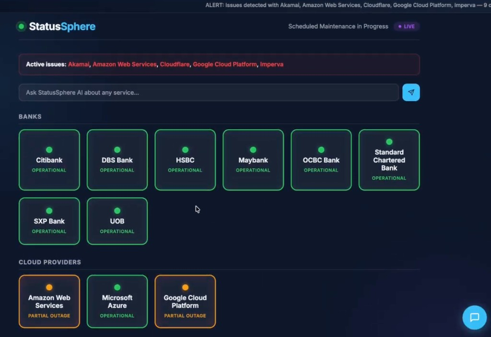

Consolidated visibility into service outages across major financial institutions and cloud service providers.

Include more Financial Institutions and critical service providers for broader sector-wide visibility.
Real-time reporting and notifications via Telegram, WhatsApp, and other messaging channels.
Historical outage trends, performance analytics, and predictive insights for proactive supervision.